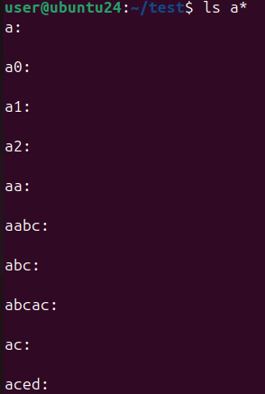
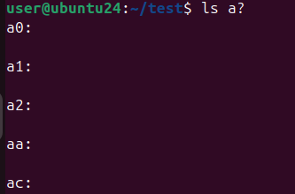
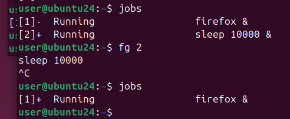
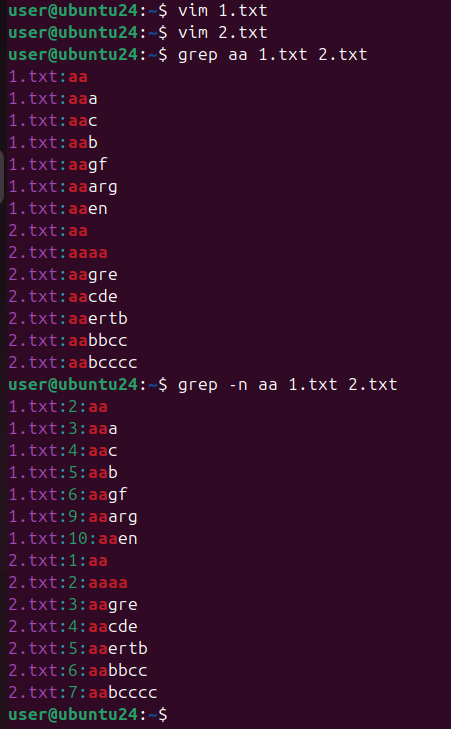
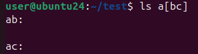
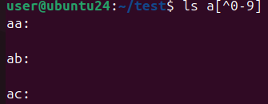
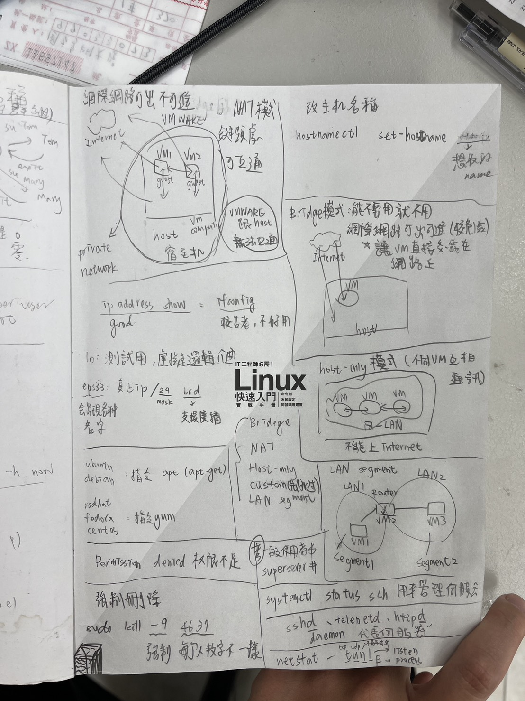
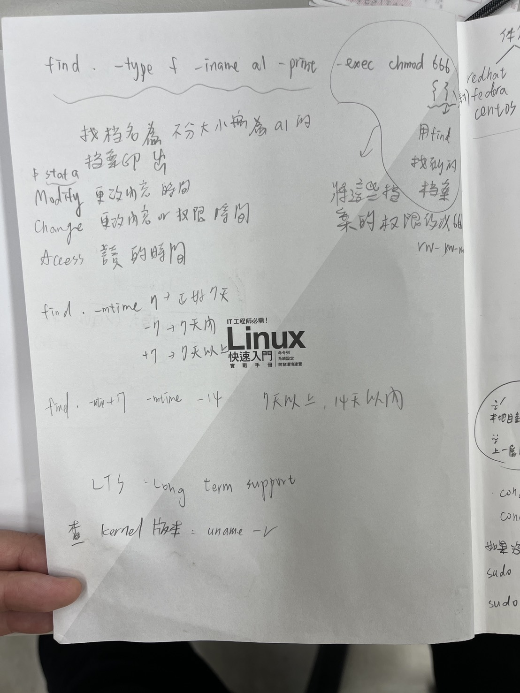
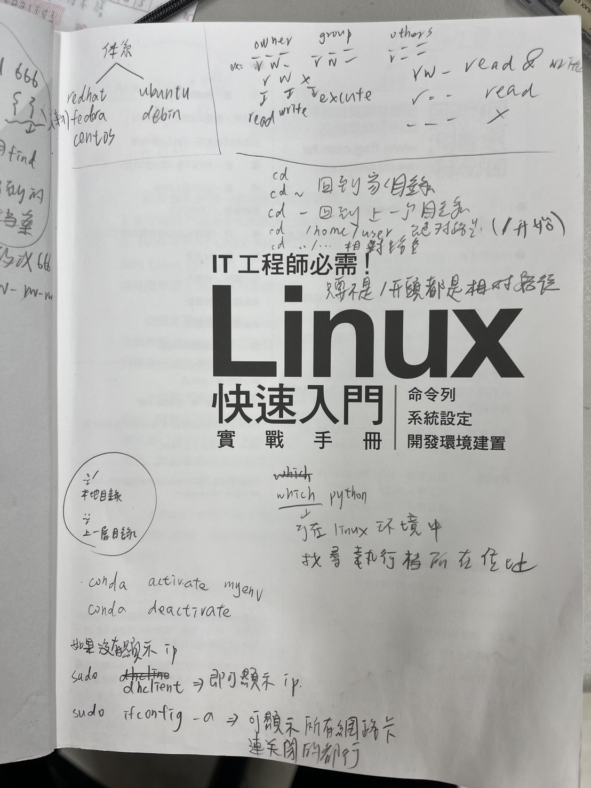
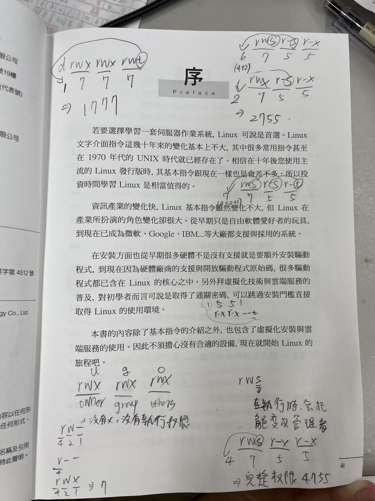

hostname：查看主機名稱
hostname -I：查看主機
sudo useradd 使用者名稱
sudo passwd 使用者名稱
whoami
chown -R 使用者:群組 目錄檔案 或 chown -R 使用者.群組 目錄檔案
ls、ls -a、ls -l、ls -al：皆可以查詢目錄下的檔案，指示查詢的細項不同。ls -al顯示最詳細的資料(在Linux中任何檔案開始為 . 的檔案即為隱藏檔)。
touch a
rm -i
rm -f
.bashrc 後，需執行以下其中一個指令：
重新連接、source .bashrc或 . .bashrc
>a.txt或1>a.txt
ls 1>ok.txt 2>error.txt：會生成 ok.txt 和 error.txt 的檔案，當 ls 正常執行，ok.txt 中會顯示內容，error.txt 為空白檔案；當 ls 執行失敗，ok.txt 為空白檔案、error.txt 會顯示內容。
0：標準輸入 1：標準輸出 2：標準錯誤輸出 2>&1：把標準錯誤輸出導向跟標準輸出一樣，當想在檔案中同時看到正確跟錯誤訊息。
cat a.txt b.txt > c.txt：將 a.txt 跟 b.txt 合併成 c.txt。
find /usr/lib/ -name "*test*"：在 /usr/lib/ 目錄下尋找名字含有 test 的檔案。
*：多個任意字元 
?：單個字元 
poweroff：關機 reboot：重新開機 ifconfig (或 ip a)：查詢網路 more：會分頁，只能往下 less：會分頁，可以往上、往下 cat：查看檔案內容 tail -n 5 /etc/passwd：看檔案最後 n 筆（例如查看 /etc/passwd 最後 5 筆資料） head -n 5 /etc/passwd：看檔案前面 n 筆（例如查看 /etc/passwd 前 5 筆資料） find：常搭配 -name、-size 等參數進行搜尋 which：去 $PATH 所記錄的資料夾中搜尋可執行檔 locate：搜尋前要執行 sudo updatedb 更新資料庫 sudo docker rm -f container_id：強制刪除正在執行的 docker 容器。
alias mycopy="cp -r"：把 cp -r 指令取別名為 mycopy。
ctrl+A：跳到指令最前面 ctrl+E：跳到指令最後面 sleep 10000 &：把 sleep 10000 丟到背景執行。
jobs 查詢目前有哪些程式在背景執行，會顯示工作數字。輸入 fg 數字會讓該背景工作跑回前景執行。
ps -ef：查看全系統程序（進程）的執行情況。
nohup：讓指令在背景運行，即使關閉終端機仍會繼續執行。
grep [參數] "關鍵字" -A：after多顯示匹配行之後的幾行 -B：before多顯示匹配行之前的幾行 -i：不分大小寫 -v：排除在外（反向選擇） -n：加上n會列出該關鍵字所在的行數，例如：grep -n aa 1.txt 2.txt grep -n aa l.txt 2.txt加上n會列出這兩個檔案中有aa的行數
ls a[bc]：匹配a後面帶有b或c的檔案（例如ab, ac）
ls a[^0-9]：匹配a後面不是數字的檔案（例如aa, ab）
top：即時查看系統功能與資源使用率（CPU、記憶體、程序）
df -h



